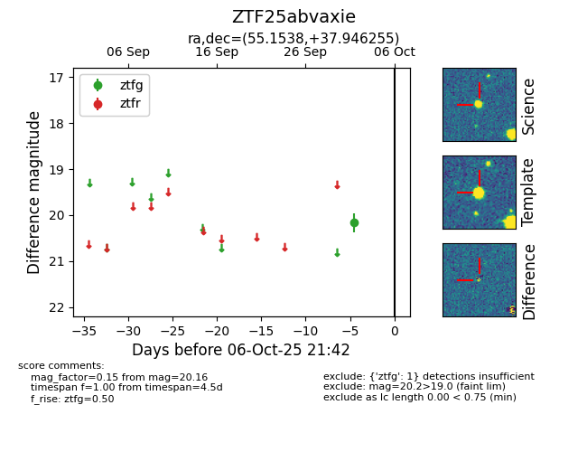

FINK: ZTF25abvaxie
Lasair: ZTF25abvaxie
ALeRCE: ZTF25abvaxie
ZTF25abvaxie (ztf,fink)
equatorial (ra, dec) = (55.1538,+37.94626)
galactic (l, b) = (156.0574,-13.81282)

last ztfg=20.16
1 ztfg detections